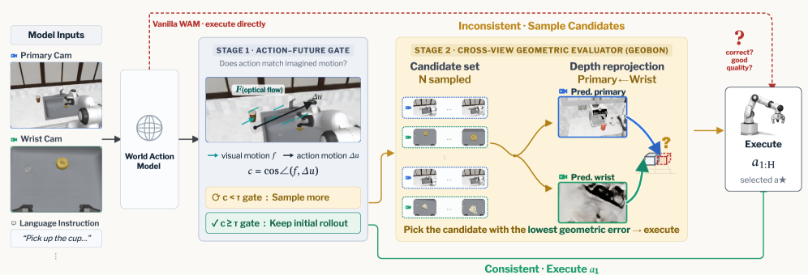
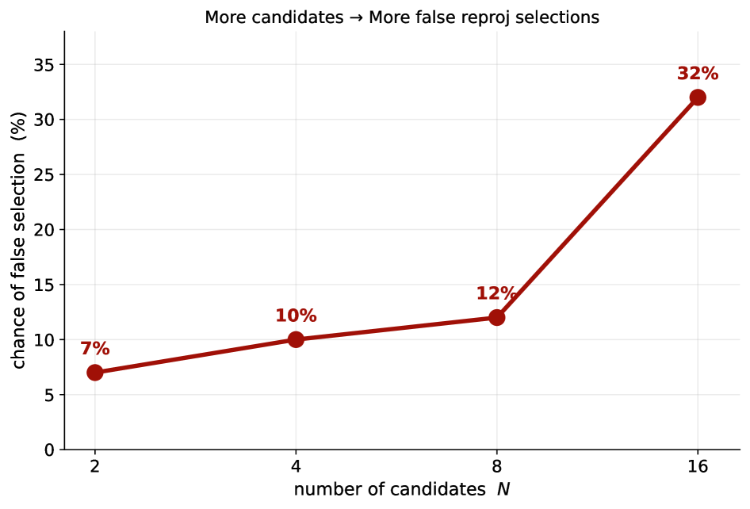

제출: 2026-07-20 · 프리즈된 VGGT-Ω · Cosmos Policy · X-WAM · Motus 백본에 적용
한 줄 요약 (TL;DR)
World Action Model(WAM)은 미래 프레임과 액션을 동시에 예측한다. 저자들은 이 예측이 기하학적으로 self-consistent한지를 동결된 geometry foundation model(VGGT-Ω)로 zero-shot 채점해 Best-of-N을 뽑는다. 나아가 Action–Future Gate로 필요할 때만 추가 샘플링해 대부분의 이득을 낮은 비용으로 회수. RoboCasa 66.3→68.4(Cosmos Policy)/80.8→82.5(X-WAM), LIBERO Long 97.5→99.3, RoboTwin 2.0 87.8→89.9. Gate는 이득의 63.6–85.7%를 14.2–34.5% 결정에만 트리거해 회수.
1배경 · 문제의식
WAM(Cosmos·X-WAM·Motus 등)은 이미지·언어·상태에서 미래 프레임과 액션 궤적을 함께 생성한다. 확률 정책이므로 여러 rollout을 sampling해 최선을 고르는 Best-of-N은 자연스러운 test-time scaling 전략이지만, "최선"을 판단할 보상/검증 신호가 없다. 기존 방법은 태스크 라벨이나 성공 판별기를 학습해야 했다. 이 논문의 통찰: WAM이 예측한 미래 프레임과 실행 rollout이 물리적으로 정합해야 한다 — 즉 서로 다른 카메라 뷰의 깊이 재투영이 일관해야 한다. 이는 태스크 라벨 없이 frozen geometry FM만으로 점수화 가능.
2핵심 Contribution
GeoBoN (fixed-budget) — WAM에서 N=8 rollout을 뽑고, 각 rollout의 1인칭·손목 카메라 예측 프레임 간 cross-view depth reprojection inconsistency를 VGGT-Ω로 계산해 최소값을 선택. 훈련 없음, task-label 없음.
Gated GeoBoN — 초기 rollout에 대해 Action–Future Gate(광학 흐름 + 그리퍼 궤적 재투영 정합) 검사. 정합이면 그대로 통과, 불일치 시에만 GeoBoN을 트리거. 거의 대부분 이득 회수 + 지연 대폭 감소.
범용성 — Cosmos Policy·X-WAM·Motus 등 다른 WAM 백본, RoboCasa·LIBERO Long·RoboTwin 2.0 등 다른 벤치에서 일관 향상. 훈련 데이터 접근 불필요, plug-in.
3Method
WAM 예측 구조
WAM은 (관찰, 언어, 상태)에서 (a) 미래 프레임 시퀀스 F̂ = {F̂1,…,F̂H}와 (b) 액션 궤적 â = {â1,…,âH}를 동시에 산출. WAM은 보통 주 뷰 + 손목 뷰 두 카메라를 예측하도록 학습됨.
Cross-View Geometric Evaluator
Score(rollout) = Reproj-Inconsistency( VGGT-Ω(F̂main), VGGT-Ω(F̂wrist) ) — 두 뷰의 예측 프레임을 동결 geometry FM으로 3D 복원한 뒤, 서로에게 재투영해 깊이·픽셀 불일치를 픽셀 오차로 축약. 낮을수록 물리적으로 정합. 태스크 라벨 없음.
이렇게 얻은 점수로 Best-of-N 선택. 저자들은 이 점수가 실제 태스크 성공률과 강하게 상관됨을 실험적으로 보인다.
Action–Future Gate
초기 rollout 1개를 뽑아 두 가지 정합성만 검사: (i) 예측 프레임 광학 흐름과 예측 액션이 시사하는 그리퍼 이동 방향이 일치하는가, (ii) 그리퍼 3D 궤적을 미래 프레임에 재투영했을 때 시각적으로 그럴싸한가. 두 검사 모두 통과하면 그대로 실행(비용 x1), 실패하면 N=8 GeoBoN을 트리거(비용 x8).
구현 요약
Geometry FM
VGGT-Ω (frozen, zero-shot 3D reconstruction)
N (BoN)
8
대상 WAM
Cosmos Policy · X-WAM · Motus
벤치
RoboCasa · LIBERO Long · RoboTwin 2.0
4실험 결과
Fixed-budget GeoBoN (N=8) 성공률 %
벤치 · 백본
Base
+ GeoBoN
Δ
RoboCasa · Cosmos Policy
66.3
68.4
+2.1
RoboCasa · X-WAM
80.8
82.5
+1.7
LIBERO Long · Cosmos Policy
97.5
99.3
+1.8
RoboTwin 2.0 · Motus
87.8
89.9
+2.1
서로 다른 3개 벤치·3개 WAM 백본에서 모두 +1.7 ~ +2.1 pp 일관 향상. 훈련 없음.
Gated GeoBoN 효율
always-on GeoBoN이 낸 향상분의 63.6–85.7%를 회수.
추가 sampling은 결정 지점의 14.2–34.5%에만 트리거.
평균 지연은 base 대비 크게 감소하여 실시간 제어(≥10Hz) 관점에서 실용적.
정성 분석
실패 예시: (예: 컵을 잘못된 접시로 놓기) 잘못된 rollout은 예측 미래 프레임과 실제 카메라 재투영에서 큰 3D 불일치를 보이며, Geometric Evaluator가 이를 낮은 순위로 뽑아냄. 이는 이 방법의 물리적 근거가 실제로 작동함을 보여주는 정성적 증거.
5Ablation (주요 발견)
Cross-view depth reprojection → single-view: 점수 품질 저하 → 서로 다른 뷰의 정합이 핵심 신호.
VGGT-Ω → 다른 3D FM: 정확도 비슷하나 최신 VGGT-Ω가 zero-shot에서 안정적.
학습 필요 없음: 정책·벤치 변경 시에도 별도 훈련 없이 즉시 적용 가능 — 이 논문의 실용성 우위.
6핵심 Figure / Table

Figure 1 — Gated GeoBoN 개요. 초기 rollout이 Action–Future Gate를 통과하면 그대로 실행, 실패 시 N=8 GeoBoN을 트리거. 채점은 두 뷰 예측 프레임의 cross-view depth reprojection 정합. (출처: arXiv:2607.17454)

Figure 2 — 예산 대비 오선택율. N을 늘려도 오선택율(false low-score selection)이 크게 개선되지 않아 N=8이 실용적. 좌·우 뷰의 3D 정합 점수가 실제 성공률과 상관. (출처: arXiv:2607.17454)
메시지 — "훈련 없이, 태스크 라벨 없이, 프리즈된 geometry FM으로 물리적 self-consistency만 채점해도 WAM의 test-time 이득을 얻을 수 있다"는 매우 general한 recipe. 향후 world model 계열 로봇 정책의 표준 TTS 추가로 자리잡을 가능성.